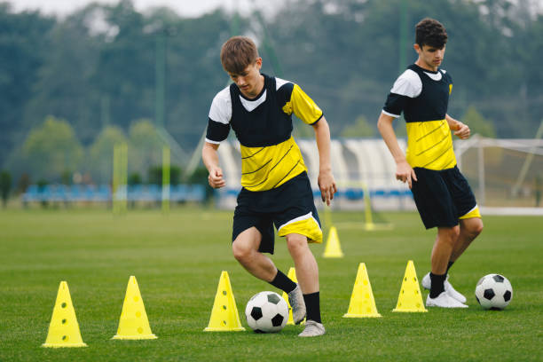

информация о футболе

История футбола:
Футбол имеет древние корни и развивался в разных культурах веками. Однако современные правила и формат игры были стандартизированы в середине 19 века в Великобритании. Первая ассоциация по футболу, известная как The Football Association (FA), была создана в 1863 году, и именно отсюда начинается история официального футбола.
Правила и формат:
Футбол играется двумя командами, каждая из которых состоит из 11 игроков. Цель игры — забить мяч в ворота противника и не допустить, чтобы мяч попал в собственные ворота. Мяч должен пересечь линию ворот целиком, чтобы засчитаться гол.
Игра длится обычно 90 минут, разделенные на два тайма по 45 минут. В случае ничьей может быть добавлено дополнительное время, а затем, при необходимости, серия пенальти.
Позиции на поле:
В команде есть разнообразные позиции, каждая из которых имеет свои особенности. Например:
Вратарь (голкипер): Задача - защищать ворота, отбивать удары и держать ворота невскрытыми.
Защитники: Задача - защищать свою половину поля, прерывать атаки противника и перехватывать мяч.
Полузащитники: Задача - участвовать как в обороне, так и в атаке, создавая атакующие возможности и задерживая мяч.
Нападающие: Задача - забивать голы, создавать опасные моменты перед воротами соперника.
Международные турниры:
Футбол объединяет миллионы фанатов по всему миру, и существует множество престижных международных турниров:
Чемпионат мира по футболу (FIFA World Cup): Состоится каждые 4 года и считается самым престижным мировым турниром.
Чемпионат Европы (UEFA European Championship): Также проводится каждые 4 года для национальных сборных Европы.
Лига чемпионов УЕФА (UEFA Champions League): Турнир для лучших клубных команд Европы.
Кубок Конфедераций (FIFA Confederations Cup): Турнир, предшествующий Чемпионату мира.
Звезды и легенды:
История футбола насчитывает множество легендарных игроков, таких как Пеле, Диего Марадона, Йохан Кройфф, Мишель Платини, Лионель Месси, Криштиану Роналду и многие другие, которые оставили свой след в мире спорта.
Влияние на общество:
Футбол имеет огромное влияние на общество. Он объединяет людей независимо от национальности, вероисповедания и социального статуса. Матчи футбола становятся поводом для встреч с друзьями, общения, взаимодействия и воодушевления.
Футбол — это не только спорт, но и культурное явление, символ соревновательности и солидарности, вдохновляющий миллионы людей по всему миру.
советы

Развивайте технику:
Оттачивайте навыки контроля мяча, передачи, дриблинга и ударов по воротам. Регулярная тренировка поможет улучшить ваши технические навыки.
Физическая подготовка:
Футбол требует хорошей физической формы. Работайте над выносливостью, силой, скоростью и гибкостью. Регулярные тренировки на физической подготовке помогут вам стать более эффективным игроком.
Тактика и понимание игры:
Понимание тактики и стратегии игры так же важно, как и технические навыки. Учите основы позиционной игры, взаимодействия с партнерами по команде и анализируйте игру соперников.
Участие в матчах:
Играйте как можно больше матчей, чтобы набраться опыта и применять навыки на практике. Участие в различных лигах, турнирах и дружеских матчах поможет вам продвинуться на пути к профессионализму.
Тренировки и коучинг:
Присоединитесь к хорошей футбольной академии или клубу, где вы сможете получить качественные тренировки и индивидуальное внимание от опытных тренеров.
Постоянство и самодисциплина:
Путь к профессиональному футболу может быть долгим и трудным. Важно сохранять мотивацию, дисциплину и готовность работать над собой в течение длительного времени.
Образование:
Не забывайте о получении образования. Правила жизни профессионального спортсмена могут быть непредсказуемыми, поэтому важно иметь альтернативный план, связанный с образованием или другой карьерой.
Продвижение и выставление себя:
Участвуйте в просмотрочных сборах, турнирах и матчах, чтобы выставить себя на показ. Заключайте контракты с агентами или представителями, которые могут помочь вам найти оптимальные предложения от клубов.
Учитеся на ошибках:
Не бойтесь совершать ошибки, это естественная часть процесса обучения. Анализируйте свои ошибки и стремитесь к постоянному улучшению.
Ментальная подготовка:
Важно развивать позитивное мышление, уверенность и способность справляться с давлением. Ментальная стойкость играет огромную роль в достижении успеха на высоком уровне.
Помните, что путь к становлению профессиональным футболистом требует усилий, настойчивости и преданности. Необходимо постоянно учиться и развиваться, чтобы достичь своей цели